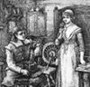
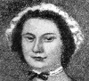
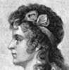
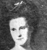
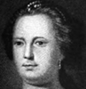
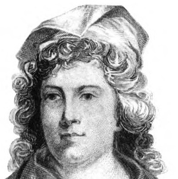
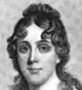
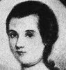
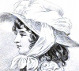

Collective Biographies of WomenAn Annotated Bibliography
Alison Booth
340.
Green, Harry Clinton and Mary Wolcott Green. The Pioneer Mothers of America: A Record of the More Notable Women of the Early Days of the Country, and Particularly of the Colonial and Revolutionary Periods. 3 vols., New York: Putnam's, 1912.
Search OCLC WorldCat for this title.
Search Google Books for this title.
Green, Harry Clinton and Mary Wolcott Green. The Pioneer Mothers of America: A Record of the More Notable Women of the Early Days of the Country, and Particularly of the Colonial and Revolutionary Periods. 3 vols., New York: Putnam's, 1912.
Cf. varied titles by William W. Fowler and John Frost.
TOC: American Womanhood in the Making; The Women of Pioneer Days; Pocahontas: Virginia; Priscilla Mullins of Plymouth; Annetje Jans: New York; Ann Hutchinson; Eunice Williams; Some Noteworthy Women of Colonial Times; Home-making in the Wilderness.
-
The Pioneer Mothers of America
-
Dorothy Quincy Hancock
-
Mrs. John Adams (Abigail Smith)
-
Mrs. Robert R. Livingston
-
Mrs. Chauncey Goodrich (Mary Ann Wolcott)
-
Mrs. Robert Morris (Mary White)
-
Julia Stockton Rush
-
Deborah Read
-
Sarah Franklin Bache
-
Mrs. Charles Carroll (Harriet Chew)
-
Martha Jefferson
-
Faith Trumbull
-
Mrs. John Jay
-
Mercy Otis Warren
-
Mrs. James Duane
-
 Mary Silliman
Mary Silliman
Search OCLC WorldCat for this title.
Search Google Books for this title.